Lola Aviamentos — Otimização para Mecanismos de Resposta
Diagnóstico: a Lola Aviamentos tem invisibilidade total em AI Search. Zero citações em ChatGPT, Perplexity, Gemini, Claude, Copilot ou Google AI Overviews. Zero structured data. Zero definition blocks. Zero conteúdo informacional. Zero domínio de referência.
O setor de aviamentos tem baixíssima maturidade AIO/GEO no Brasil. A empresa que primeiro estruturar conteúdo para citação em LLMs domina o próximo ciclo de descoberta digital. A janela de oportunidade é de 3 a 6 meses antes que concorrentes ocupem esse espaço.
Otimização para que LLMs (ChatGPT, Gemini, Claude) extraiam, compreendam e citem o conteúdo da marca em respostas generativas. Envolve structured data, definition blocks, extractability score e formato de resposta direta.
Otimização da presença da marca em mecanismos de resposta generativa: Google AI Overviews, Perplexity, ChatGPT Search, Copilot. Diferente de SEO (links azuis), GEO busca ser citado como fonte confiável dentro da resposta gerada pela IA.
SEO tradicional busca ranquear no topo dos resultados de busca (link azul). AIO/GEO busca ser citado dentro da resposta que a IA gera — sem cliques, sem CTR tradicional. É um novo canal de descoberta: o usuário pergunta, a IA responde citando sua marca, e o usuário decide clicar ou não. Quem não estiver nos dados de treinamento e nas fontes preferidas dos LLMs, simplesmente não existe nesse novo ecossistema.
| Canal de AI Search | Presença da Lola | Status |
|---|---|---|
| ChatGPT (GPT-4o / GPT-4.1) | Zero citações em respostas sobre aviamentos | Invisível |
| Perplexity | Zero citações em respostas sobre entretelas | Invisível |
| Gemini / Google AI Overviews | Zero aparições em AI Overviews | Invisível |
| Claude (Anthropic) | Zero citações | Invisível |
| Microsoft Copilot | Zero citações | Invisível |
| Google Business Profile | Não otimizado para citação em AI Search local | Não otimizado |
Extractability Score: 0.2 / 10 — o site da Lola oferece mínimas condições para que LLMs extraiam e citem seu conteúdo.
Blocos de 50-80 palavras para adicionar como texto visível nas páginas de categoria. Este é o formato preferido por LLMs para citação direta em respostas.
Entretela de memória é um tipo de entretela termocolante fabricada em não tecido (TNT) com resina termofusível em um dos lados. Também conhecida como entretela cavalinho, é utilizada na fabricação de bonés, viseiras e acessórios estruturados. Disponível em 220g a 330g, nas cores branca, cinza e preta.
Entretela rasgável (ou de rasgo fácil) é um tipo de entretela não tecido descartável utilizada como base para bordado computadorizado. Após o bordado, é removida manualmente puxando-a da peça, sem necessidade de água ou produtos químicos. Gramaturas comuns: 30g, 40g e 50g.
Entretela hidrossolúvel é um filme plástico à base de PVA (álcool polivinílico) que se dissolve em água. Utilizada como base para bordados onde o tecido não pode ser danificado por remoção mecânica — ideal para toalhas, tecidos felpudos e peças com aviamentos delicados. Dissolução em água a partir de 40°C.
Insumos para bonés são todos os componentes necessários para a fabricação de bonés personalizados ou prontos. Incluem aba plástica (curva ou reta), regulador plástico (snapback ou proflex), tela de poliéster (mesh ou fechada), viés de carneira, tecido suede, botão de forrar e case para bonés.
Demandas informacionais não atendidas pelo site da Lola — cada uma representa uma oportunidade de conteúdo citável por LLMs.
| Keyword | Volume/mês | Tipo de Conteúdo | Formato LLM |
|---|---|---|---|
| patchwork | 2.600 | Guia / Glossário | Definition block |
| entretela para bordado | 2.400 | Guia Pilar | HowTo + FAQPage |
| aviamentos para confecção | 1.100 | Guia Pilar | Definition block |
| bordado computadorizado | 990 | Guia / Glossário | Definition block + HowTo |
| entretela para alfaiataria | 880 | Guia Pilar | FAQPage |
| entretela cavalinho | 400 | Glossário | Definition block |
| como fazer bainha sem costura | 400 | How-To | HowTo schema |
| o que é entretela de memória | 320 | Definition Block | FAQPage + Definition |
Distribuído em 3 fases, totalizando ~159 horas de esforço AIO/GEO dedicado.
| # | Ação | Horas | Impacto AIO |
|---|---|---|---|
| 1 | Organization + Store schema (homepage + empresa) | 1 | Entidade da Lola no grafo de conhecimento |
| 2 | Product schema em 78 páginas de produto | 4 | LLMs extraem dados de produto estruturados |
| 3 | BreadcrumbList schema em todas as páginas | 2 | Contexto hierárquico para LLMs |
| 4 | Definition blocks em 5+ páginas de categoria | 4 | Conteúdo citável de 50-80 palavras |
| 5 | FAQPage schema (template base) | 2 | Formato de resposta direta para IAs |
| # | Ação | Horas | Impacto AIO |
|---|---|---|---|
| 6 | Guia Pilar: "Tipos de Entretela para Bordado" (2.500+ palavras) | 12 | Autoridade temática + citação em LLMs |
| 7 | Guia Pilar: "Entretela de Memória: Guia Completo" (2.000+) | 10 | Autoridade temática + citação em LLMs |
| 8 | Guia Pilar: "Insumos para Bonés: Guia Completo" (3.000+) | 14 | Autoridade temática + citação em LLMs |
| 9 | FAQ Page: 10 perguntas sobre entretelas (FAQPage schema) | 4 | Respostas diretas para extração de LLMs |
| 10 | How-To: "Como aplicar entretela termocolante" (HowTo schema) | 3 | Passo-a-passo para LLMs citarem |
| 11 | How-To: "Como usar filme hidrossolúvel no bordado" | 3 | Passo-a-passo para LLMs citarem |
| 12 | Glossário de Entretelas (20+ termos técnicos) | 6 | Definition blocks em escala |
| 13 | Glossário de Insumos para Bonés (15+ termos) | 4 | Definition blocks em escala |
| # | Ação | Horas | Impacto AIO |
|---|---|---|---|
| 14 | Guia Pilar 4: "Rasgável vs Hidrossolúvel" (1.500+) | 8 | Conteúdo comparativo para LLMs |
| 15 | Guia Pilar 5: "Entretela para Alfaiataria" (2.000+) | 10 | Novo cluster temático |
| 16 | Guia Pilar 6: "Como Montar uma Fábrica de Bonés" (2.500+) | 12 | Conteúdo de alto valor para LLMs |
| 17 | Headless blog operacional com 12+ artigos (1/semana) | 60 | Conteúdo fresco para LLMs revisitarem |
| 18 | Estratégia de backlinks (diretórios, guest posts) | 20 | Domínio de referência para LLMs |
| 19 | Google Business Profile otimizado | 2 | Citação em AI Search local |
| 20 | LinkedIn + Instagram com conteúdo técnico | 8 | Presença digital = sinais para LLMs |
| KPI | Atual | Fase 1 | Fase 2 | Fase 3 |
|---|---|---|---|---|
| AI Citation Count (ChatGPT + Perplexity + Gemini) | 0 | 0 | 3+ | 10+ |
| Páginas com structured data | 0% | 60% | 100% | 100% |
| Páginas com definition blocks | 0 | 5 | 10 | 20+ |
| Páginas com FAQPage schema | 0 | 0 | 3 | 5+ |
| Páginas com HowTo schema | 0 | 0 | 2 | 6+ |
| Guias pilares AEO publicados | 0 | 0 | 3 | 6 |
| Glossários técnicos publicados | 0 | 0 | 2 | 3+ |
| Google Business Profile otimizado | Não | Não | Não | Sim |
| Conteúdo editorial (guias + blog) | 0 | 0 | 3+ | 15+ |
| Métrica | Conservador (90 dias) | Otimista (90 dias) |
|---|---|---|
| AI Citation Count | 5+ citações | 15+ citações |
| Tráfego informacional incremental | +5% a +10% | +15% a +25% |
| Páginas com conteúdo citável | 10+ | 25+ |
| Featured snippets em AI Overviews | 3+ | 10+ |
| Domínio de referência (DR) | +3 a +5 | +8 a +12 |
| Risco | Prob. | Impacto | Mitigação |
|---|---|---|---|
| Concorrentes ocuparem AI Search primeiro | Alta | Alto | Agir rápido. Mercado tem baixa maturidade — primeiro a publicar domina as citações. |
| LLMs mudarem critérios de citação | Média | Médio | Manter conteúdo fresco e diversificado. Não depender de um único formato. |
| Dependência de dev Nuvemshop | Alta | Médio | Schema via GTM como fallback imediato. Definition blocks são texto puro, sem dependência. |
| Google não revisitar rapidamente | Média | Médio | Sitemap + Solicitar Indexação + conteúdo novo frequente. |
| Escopo | Auditoria focada em AI Optimization (AIO) e Generative Engine Optimization (GEO) |
|---|---|
| Ferramentas | Screaming Frog SEO Spider + avaliação manual de presença em ChatGPT, Perplexity, Gemini, Claude, Copilot e Google AI Overviews |
| Dados-base | 153 URLs HTML rastreadas + análise de extractability + structured data audit + pesquisa de keywords informacionais |
| Data | Julho 2026 |
| Metodologia | V4 Company — Padrão BuiltVisible / Moz / Searchmetrics + frameworks próprios de AI Search |